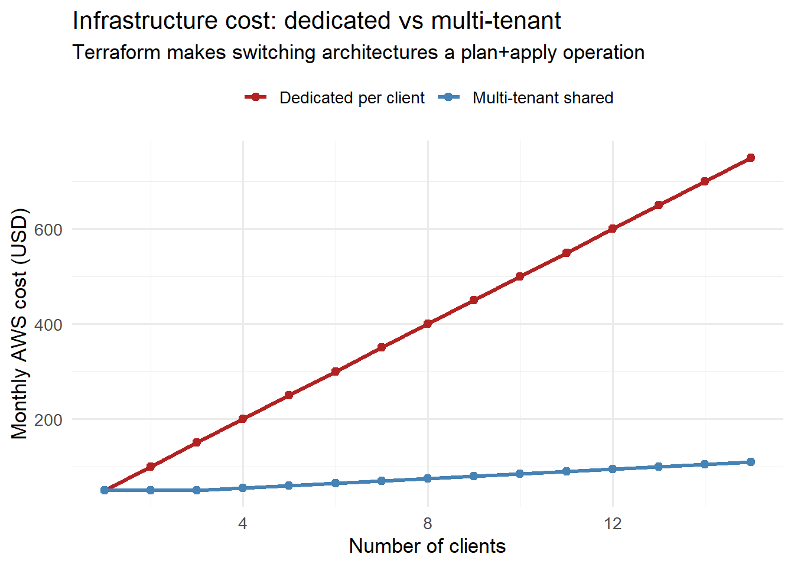

Infrastructure as Code: Reproducible AWS Environments with Terraform
Clicking through the AWS console is a recipe for undocumented, unreproducible infrastructure. Terraform turns cloud resources into version-controlled code. Skill 14 of 20.
business skills
infrastructure as code
Terraform
AWS
DevOps
Author
Jong-Hoon Kim
Published
April 24, 2026
1 The “snowflake server” problem
You spend two days clicking through the AWS console to configure an EC2 instance, install Docker, set up TimescaleDB, and configure the load balancer. It works perfectly. Three months later you need to replicate this environment for a second client — and you cannot remember exactly what you did. The original server is a snowflake: unique, unreproducible, undocumented.
Infrastructure as Code (IaC)(1) solves this by expressing every cloud resource as a configuration file that lives in git. Terraform is the most widely used IaC tool; it supports AWS, GCP, Azure, and 200+ other providers. (2)
2 Core Terraform concepts
Concept
Description
Provider
Plugin for a cloud platform (AWS, GCP, etc.)
Resource
A cloud object (EC2 instance, RDS, S3 bucket)
Module
Reusable collection of resources
State file
Terraform’s record of what it created
Plan
Dry-run preview of what will change
Apply
Execute the planned changes
The workflow is always: terraform plan → review → terraform apply.
3 The digital twin stack in Terraform
The complete Terraform configuration for the stack built in Posts 1–7:
Create separate terraform.tfvars files per environment:
terraform plan -var-file="envs/dev.tfvars"terraform apply -var-file="envs/prod.tfvars"
5 The plan/apply cycle in R
Infrastructure costs money. Model the cost impact before applying:
library(ggplot2)n_clients <-1:15# Single-instance model: one EC2 + RDS per clientcost_single <- n_clients * (15+15+20) # EC2 + RDS + ALB# Multi-tenant: shared EC2 + RDS, cost grows slowlycost_multitenant <-15+15+20+# base: EC2 + RDS + ALBpmax(0, (n_clients -3)) *5# extra compute per clientdf_cost <-data.frame(clients =rep(n_clients, 2),cost =c(cost_single, cost_multitenant),architecture =rep(c("Dedicated per client","Multi-tenant shared"), each =length(n_clients)))ggplot(df_cost, aes(x = clients, y = cost, colour = architecture)) +geom_line(linewidth =1.2) +geom_point(size =2) +scale_colour_manual(values =c("Dedicated per client"="firebrick","Multi-tenant shared"="steelblue"),name =NULL) +labs(x ="Number of clients", y ="Monthly AWS cost (USD)",title ="Infrastructure cost: dedicated vs multi-tenant",subtitle ="Terraform makes switching architectures a plan+apply operation") +theme_minimal(base_size =13) +theme(legend.position ="top")

Monthly AWS cost vs number of concurrent clients. At low scale, a single-instance setup is cheapest. Above ~5 clients, the cost of managing separate instances outweighs the overhead of load balancer + auto-scaling.
6 Modules for reuse
Extract the EC2 + security group + IAM pattern into a reusable module:
# modules/dt-instance/main.tf
variable "environment" {}
variable "instance_type" {}
# ... other variables
resource "aws_instance" "this" {
# ... same as before, using var.* everywhere
}
output "public_ip" { value = aws_instance.this.public_ip }
output "instance_id" { value = aws_instance.this.id }